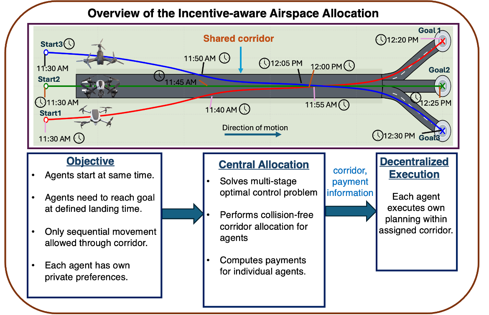
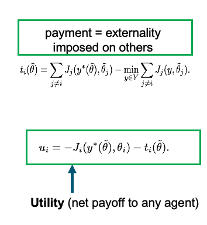
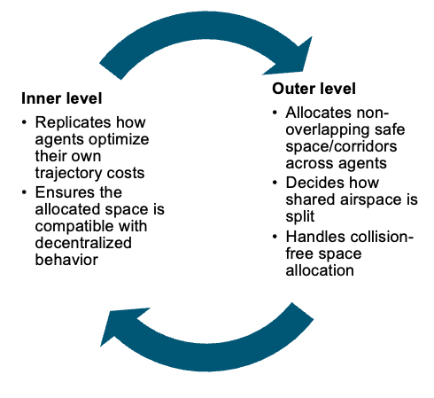
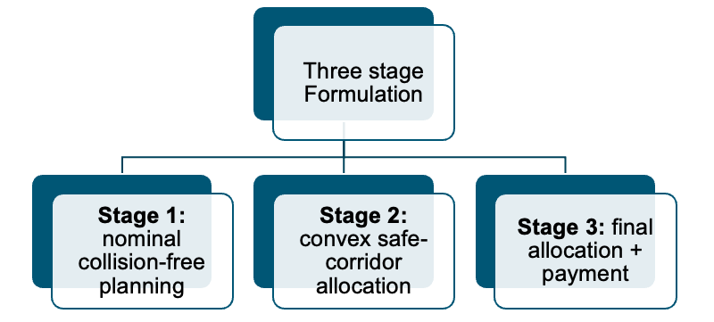
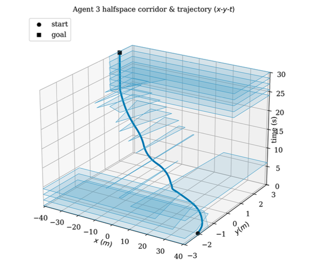
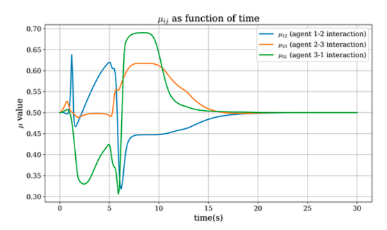
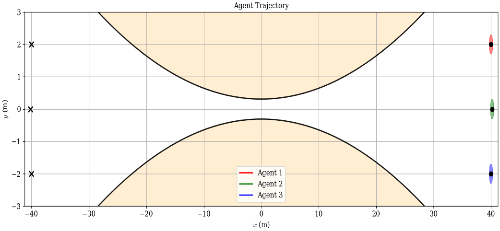

Paying for Space: Incentive-Aware Motion Planning for Multi-Agent Collision Avoidance
Debajyoti Chakrabarti, Anushri Dixit · IEEE Conference on Decision and Control (CDC), 2026
Abstract
Advanced Air Mobility (AAM) systems require scalable coordination mechanisms to manage large fleets of aerial vehicles operating in shared, capacity-limited airspace. In such environments, different operators may have private preferences over trajectory characteristics, such as travel time, fuel consumption, or deviation from nominal routes. If centralized traffic management relies on self-reported preferences, operators may strategically misreport their costs to obtain more favorable trajectories.
This paper proposes a multistage motion planning framework augmented with mechanism design to enable collision avoidance for AAM systems with privately known costs. The proposed approach integrates convex safe corridor construction with a VCG-inspired mechanism to ensure conflict-free passage through constrained airspace while incentivizing truthful revelation of private preferences. Simulation results demonstrate safe and decentralized coordination among agents with heterogeneous preferences.
Why Collision Avoidance Is Not Enough
Advanced Air Mobility systems may involve multiple autonomous aerial vehicles sharing constrained airspace or landing corridors.
The challenge is not only avoiding collisions. Different operators can have private preferences over travel time, control effort, fuel usage, or route deviation.
If the central planner relies on self-reported costs, agents may strategically misreport those preferences to obtain more favorable trajectories.
Incentive-Aware Airspace Allocation
The framework treats shared airspace as a scarce resource. A central planner:
- allocates collision-free corridors,
- accounts for each agent's reported preferences,
- computes VCG-inspired transfers based on the externality imposed on other agents.
Each agent then performs its own trajectory optimization inside its assigned safe corridor.


Central Allocation with Decentralized Execution
The ideal formulation is bilevel.
Outer level: allocates non-overlapping safe airspace, chooses how shared corridor space is divided, and minimizes total reported cost.
Inner level: represents each agent solving its own trajectory optimization, ensuring the assigned corridor is compatible with decentralized behavior.

From Bilevel Optimization to a Tractable Three-Stage Pipeline
Solving the exact bilevel problem directly is hard, since the collision-avoidance constraints are nonconvex. A three-stage decomposition gives a tractable approximation:
- Stage 1: nominal collision-free planning
- Stage 2: convex safe-corridor allocation using pairwise separating hyperplanes and mixing variables
- Stage 3: final decentralized planning and VCG-inspired transfer computation

Time-Varying Convex Safe Corridors
Pairwise separating hyperplanes define convex regions for each agent. Continuous mixing variables control where the separating boundary lies between pairs of agents.
After reconciliation, each agent receives a non-overlapping time-varying polytopic corridor and can plan independently inside it.


Decentralized Coordination in the Shared Corridor

Results
A. Social Valuation
Across 70 Monte Carlo trials with randomized initial conditions, goals, preferences, and misreporting agents, the proposed method achieved the highest average social valuation among the compared methods in both truthful and misreporting settings.
| Reporting | P2 | P3 | P4 (Ours) |
|---|---|---|---|
| Truthful | -3.30854 | -3.30907 | -3.30782 |
| Misreport | -3.3431 | -3.34105 | -3.33867 |
B. Incentive Behavior
The effect of the VCG-inspired transfer was evaluated using the difference between truthful and misreported utility (Δu).
- Without transfer: mean Δu = −2.4 × 105
- With proposed transfer: mean Δu = 2.74 × 106
The positive mean indicates that the transfer mechanism helps incentivize truthful reporting on average. This does not establish exact strategyproofness — see Limitations below.
C. Scalability
| Agents | Central time (s) | Agent time (s) |
|---|---|---|
| 3 | 147.08 | 2.26 |
| 4 | 347.4 | 2.30 |
| 5 | 924 | 2.34 |
Centralized computation is the main bottleneck, while decentralized agent-level computation remains approximately constant across the tested cases.
Takeaways and Limitations
Key Takeaways
- Collision avoidance can be combined with incentive-aware allocation.
- Convex corridor allocation enables decentralized execution.
- The VCG-inspired transfer improves truthful-reporting behavior on average.
- The method achieved higher social valuation than the tested baselines.
Limitations
- The multistage decomposition is only an approximation of the exact VCG allocation.
- The method is therefore incentive-aware, not strictly strategyproof.
- Centralized leave-one-out computations remain the scalability bottleneck.
- The current study uses deterministic planar double-integrator dynamics.
Future Directions
- More scalable or iterative allocation
- Stronger approximation guarantees
- Higher-fidelity dynamics
- Uncertainty and communication delays
- Dynamic obstacles
- Receding-horizon corridor allocation